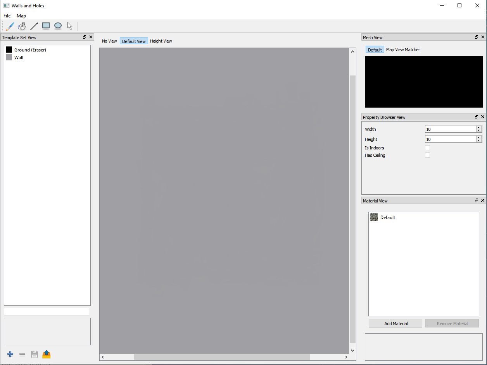
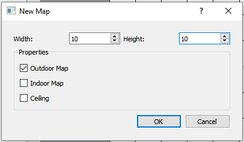
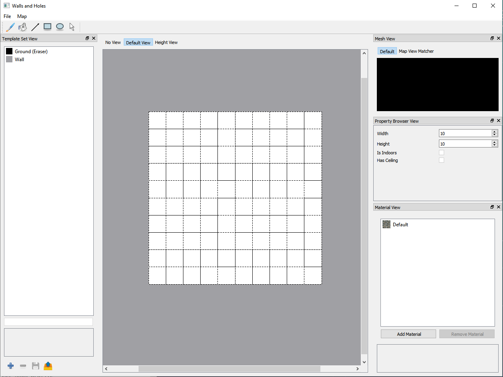
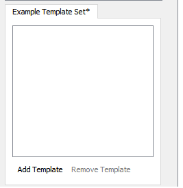
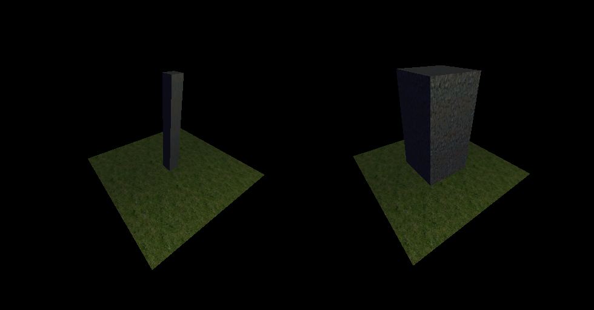
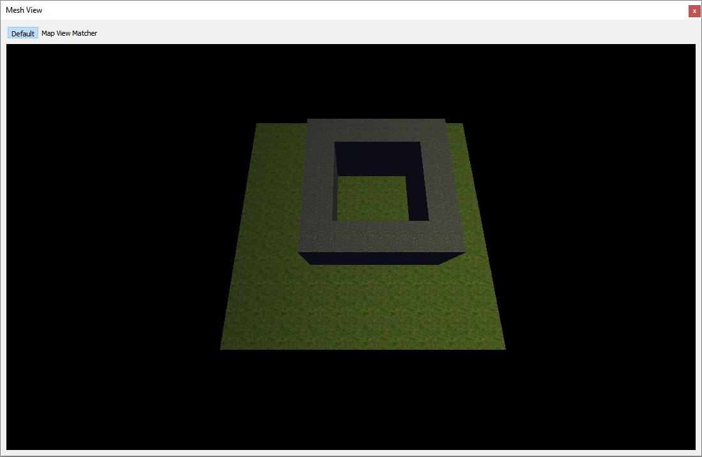
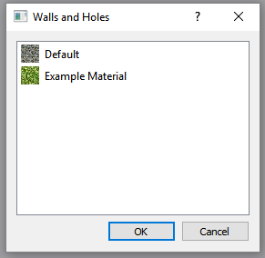

Introduction¶
Walls and Holes is a 2D map editor which lets you develop 3D maps for your games. The primary feature for this application is the ease and speed of which you can create a map, and then at the end have a great mesh which can be exported for your own use.
Getting Started¶
Installing the program¶
- Windows/Mac Installation:
To see the source code and files of the program go here.
Creating a New Map¶
When first opening the program you are greeted by the following window:
Main Window of the appilcation
To create a new map go to: File→New Map Ctrl + N

Creating a new map
The New Map dialog looks like this:
New Map Dialog
Here we choose the initial size of the map, whether it’s indoors or outdoors, and whether if the map will have a ceiling or not. After creating the new map you will see a grid of empty sqaures, and now you can draw on the map. To draw on the map you must select a Tool and also a Tile Template, there are two default Tile Templates provided, the Wall, and Ground/Eraser.
Map is created
Saving and Loading a Map¶
To save the map go to: File→Save Map Ctrl + S and choose the directory which you
want the map to be saved in.
Saving a map
Once the map is saved you may load the map into the program at anytime
you wish using File→Load Map Ctrl + O, and choose the .wts file you want to
load into the program.
To export the map into a .obj file go to: File→Export Map Mesh Ctrl + E and
choose the file directory which you want the object file to be saved in.
The Tile Template System¶
Overview¶
The Tile Template system is for users to define different tiles which can output differing meshes.
Creating New Tile Template Sets¶
Tile templates will be stored in Tile Template sets. To create a new
Tile Template set press the  button in the bottom left-hand corner
of the screen, then you will be greeted by the following prompt:
button in the bottom left-hand corner
of the screen, then you will be greeted by the following prompt:

New Tile Template Set Prompt
Enter the desired file directory which the Tile Template Set will be saved, it isrecommended that you save the Tile Template Set and the map files in the same directory.
Once that is done, a new window will pop up on the left-hand side of the screen in the Tile Set View
Press the Add Template button and this will appear in the side toolbar:

- You can modify the following properties of a Tile Template:
- Height: Height of the tile
- Thickness: How small or large the tile will be (max: 1.00)
- X Position: The X position within the grid of the mesh
- Y Position: The Y position within the grid of the mesh
- Material: The material which the tile will use
Example of changing the thickness
Left: Tile thickness of .25
Right: Tile thickness of 1.00
Saving and Loading Tile Templates¶
To save a Tile Template press the  button, and you will be
prompted to choose the directory which the Tile Template will be saved in.
button, and you will be
prompted to choose the directory which the Tile Template will be saved in.
To load a Tile Template press the  button, and you will be
prompted to choose the Tile Template which you want to use.
button, and you will be
prompted to choose the Tile Template which you want to use.
Tools¶
Tile Map Tools¶
- Brush Tool

B - The Brush tool is the main tool which is used. Its radius can be adjusted using the spin box when the tool is selected.
- Brush Tool
- Line Tool

L - The Line tool creates a line, click and drag to use
- Line Tool
- Rect Tool

R - The Rect tool is used to draw rectangles, click and drag to use
- Rect Tool
- Ellipse Tool

E - The ellipse tool draws ellipses, click and drag to use
- Ellipse Tool
- Selection Tool

S - The selection tool is used to select tiles.
- Single click to select one tile
- Shift-Click to select multiple tiles
- Double click to select tiles with same Tile Template which are touching
- Triple click to select all of one Tile Template
- Selection Tool
{kind=link}
Camera Tools¶
Mesh View Camera
The Default camera tool is the used to explore your generated 3D mesh. To move the
camera around click inside the Mesh View and drag your mouse. To pan the camera
Shift-Click the Mesh View and drag your mouse. Use the mousewheel to zoom in
and out.
The Mesh View Matcher cameral tool matches the Tile Map and the mesh in a top-down view.
Materials¶
Every Tile Template can be assigned a custom material and texture.
Adding and Removing Materials¶
To add a material press the Add Material button in the material view
window, after pressing the button this window will appear:
Material View
We are using the Phong reflection model for our shaders for the material

- You can change the following properties of a material :
- Ambient: Specifies the minimum brightness of a material
- Diffuse: Diffuse determines the general color of a material when light shines on it
- Specular: How bright the dots in the thrid image are
- Shininess: How large the dots in the third image are
- Texture:
- The texture of a material is an image specifying how a material looks.
- To assign a texture click the
...button and select the texture you wish to use.
Assigning Materials to Tile Templates¶
To assign materials to a Tile Template select the Tile Template which
you wish to assign a material to, and click on the ... button
Tile Template View
This window will pop up:
Choosing a Material
Choose the material which you wish to use for the Tile Template
Keyboard Shortcuts¶
For Mac replace Ctrl with Command
Ctrl + Mousewheel- Zoom in/out of the Tile MapCtrl + N- Create a new mapCtrl + S- Save the mapCtrl + Shift + S- Save the mapCtrl + O- Load an existing mapCtrl + W- Close the mapCtrl + E- Export the map meshCtrl + Z- Undo last actionCtrl + Y- Redo last actionB- Activate the Brush toolF- Activate the Fill toolL- Activate the Line toolR- Activate the Rect toolE- Activate the Ellipse toolS- Activate the Selection tool